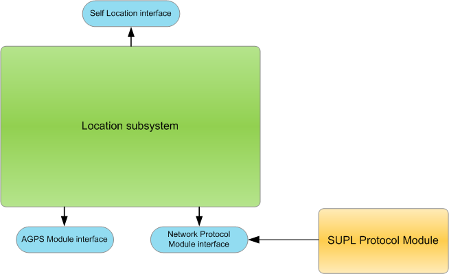

SUPL
Cell-Based Positioning Request
Using SUPL to request a cell-based position.
SUPL (Secure User Plane Location) enables a device to communicate with
a SUPL server over an IP connection.
All the components responsible
for SUPL positioning run on the Symbian platform. The architecture is based
on two plug-ins: the SUPL Proxy Protocol module and the SUPL Positioning Message
interface. The relationship between the Location subsystem and SUPL is illustrated
below. The plug-ins enable information to pass from the network directly to
the GPS hardware.
Figure 1. Location subsystem and SUPL extension

If a client application wants to obtain a position without waiting
for a GPS service a mobile network can provide a cell-based position, using
SUPL.
A cell-based positioning request using SUPL is shown in the
following steps.
- The client must
open RPositionServer and open a connection to the server by calling RPositionServer::Connect().
- The client must
then open RPositioner by calling RPositioner::Open() and
specify the UID of the Network Proxy PSY.
- The client application
sends a location request to the Location subsystem by calling RPositioner::NotifyPositionUpdate().
- The Location subsystem
forwards the location request to the SUPL Protocol module by calling CLbsNetworkProtocolBase::RequestNetworkLocation().
(In the default configuration SUPL is used for cell-based positioning).
- The SUPL protocol
module communicates with an external SUPL server and obtains a cell-based
location.
- The SUPL Protocol
Module returns the cell-based position by calling MLbsNetworkProtocolObserver::ProcessLocationUpdate().
- The Location subsystem
completes the client request.
The client application
receives a cell-based position provided by the mobile network.
Copyright ©2010 Nokia Corporation and/or its subsidiary(-ies).
All rights
reserved. Unless otherwise stated, these materials are provided under the terms of the Eclipse Public License
v1.0.